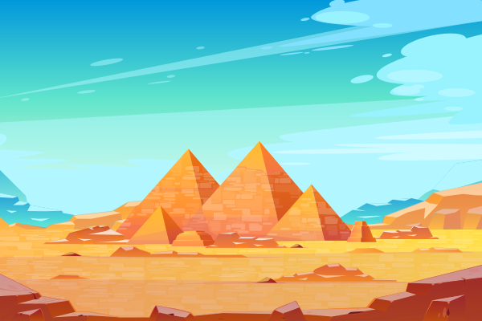
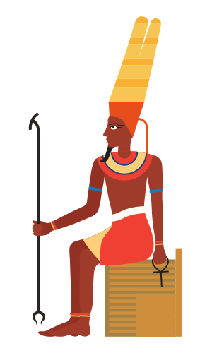
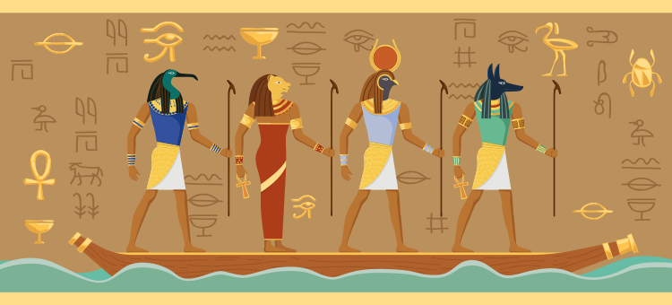
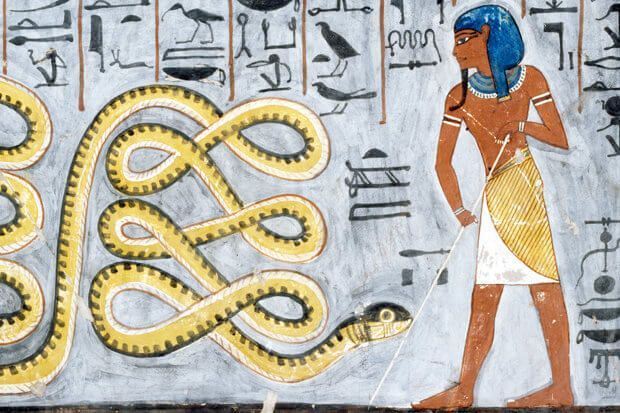

Dieu polymorphe en fonction de l’heure du jour et de la nuit, Rê est surtout indispensable à la vie sur Terre,
si bien qu’il a été placé au sommet de la Grande Ennéade des neuf dieux principaux. Rê est associé à Amon, le
dieu soleil de la ville de Thèbes, qui se fait appeler Amon-Rê lorsqu’il est au sommet de sa gloire dans le ciel.
Il est à l'origine de tout le panthéon égyptien et est celui à qui se rattachent les pharaons, qui à leur mort
sont censés s’unir à lui.Lors de la naissance de Rê, une autre créature est aussi apparue : Apophis, le serpent géant.
Ils deviennent automatiquement des ennemis, l’un représentant le Soleil et la lumière dans son sens bénéfique,
l’autre les ténèbres. Alors que le serpent est relégué aux ténèbres, Rê se voit offrir la place d’Atoum : celle
de roi des dieux et des Hommes. Son œil veille désormais sur toutes les contrées du monde. Il est représenté
majoritairement sous la forme d’un homme à tête de faucon, surmontée du disque solaire appelé Horakhty.

Rê pendant la journée parcours le fleuve des cieux dans la barque solaire et se métamorphose, à l’image du soleil.
Ce chemin va de l’horizon oriental à l’Ouest en passant au-dessus de la terre en une longue courbe. Le voyage sur
le fleuve des cieux dure 12h de la nuit à l'après-midi et les transformations de Rê suivent le cycle de la vie :
d’abord enfant, puis parfaitement adulte et enfin vieillard.

Pendant les dernières heures du jour, Rê accompagné de Heqa (la magie protectrice) et de Sia (la connaissance) et parfois, d’autres dieux comme Hou (le verbe créateur) ou Oupouaout (le dieu des chemins) traverse la Douat(L'au-delà) dans la barque solaire pour atteindre le royaume de la nuit en quittant le jour.Pendant la traversée c’est Thot qui prend la relève pour la gouvernance du ciel.
Durant la première et la deuxième heure, l’eau est abondante et la barque avance bien. Des babouins accueillent chaleureusement les dieux qui sont protégés par des génies armés.
Durant la troisième heure, le serpent Apophis apparait et se met en travers de la
route de Rê. Même affaiblit à cette heure de la nuit, le dieu soleil réussit à le terrasser. Seulement parfois, ce
n’est pas le cas : le soleil est alors prisonnier des ténèbres (c’est peut-être l’explication égyptienne du phénomène
d’éclipse solaire). Dans son combat, Rê peut être aidé et peut parfois revêtir la forme d’Atoum pour augmenter sa puissance.

A la quatrième heure, l'obscurité est plus profonde que jamais et l’eau n’est plus vraiment abondante, si bien qu’il faut tirer la barque pour qu’elle avance sur le sable. C’est encore la faute du serpent Apophis qui a avalé toute l’eau du fleuve. Heureusement, Rê n’est pas seul. Cette fois, c’est le dieu Seth, d’habitude réputé pour sa malveillance, qui vient en aide à son ancêtre. Il transperce le flan du serpent de sa lance et libère toute l’eau du fleuve afin que la barque puisse reprendre son cours.
Pendant la cinquième heure, la barque passe près du cadavre d’Osiris et l’espoir renait enfin. Rê s’associe alors à son
ancien cadavre, le scarabée Khepri et redémarre donc le cycle.
La sixième heure marque le retour de l’énergie vitale de Rê. Pour ce faire, il doit se régénérer à l’abri des dangers. Il est alors protégé par le serpent bienfaisant Mehen qui le protège en l’enveloppant de ses anneaux.
Lors de la septième et la huitième heure, les Hommes peuvent enfin apercevoir leur dieu. Ils amènent des cadeaux sur les rives du fleuve (armes, tissus, attributs royaux). Mais d’autres ne sont pas de cet avis et tentent d’attaquer le dieu soleil. Ils sont automatiquement capturés et châtiés, attachés à des poteaux de torture et brûlés par des cobras cracheurs de flammes. On en décapite certains et on les met à cuire dans de grands chaudrons. Leur sang vient alimenter des lacs de flammes alentours. Pendant ce temps, Apophis n’en a pas terminé avec Rê et tente de revenir à la charge, mais il est directement arrêté par la déesse Serket (ou Serqet) qui le terrasse avec fureur.
A la neuvième heure et jusqu’à la onzième, le soleil commence à être haut dans le ciel. Apophis fait son grand retour pour un ultime affrontement entre la lumière et les ténèbres. Apophis essaie encore d’arrêter le temps, mais en est incapable car Rê est presque au sommet de sa puissance.
A la douzième heure , la barque est hissée vers la lumière. En traversant le serpent du temps, ils passent de vieillards à enfants. Ainsi tous les habitants reçoivent la lumière : on les appelle les « troupeaux de Rê ».